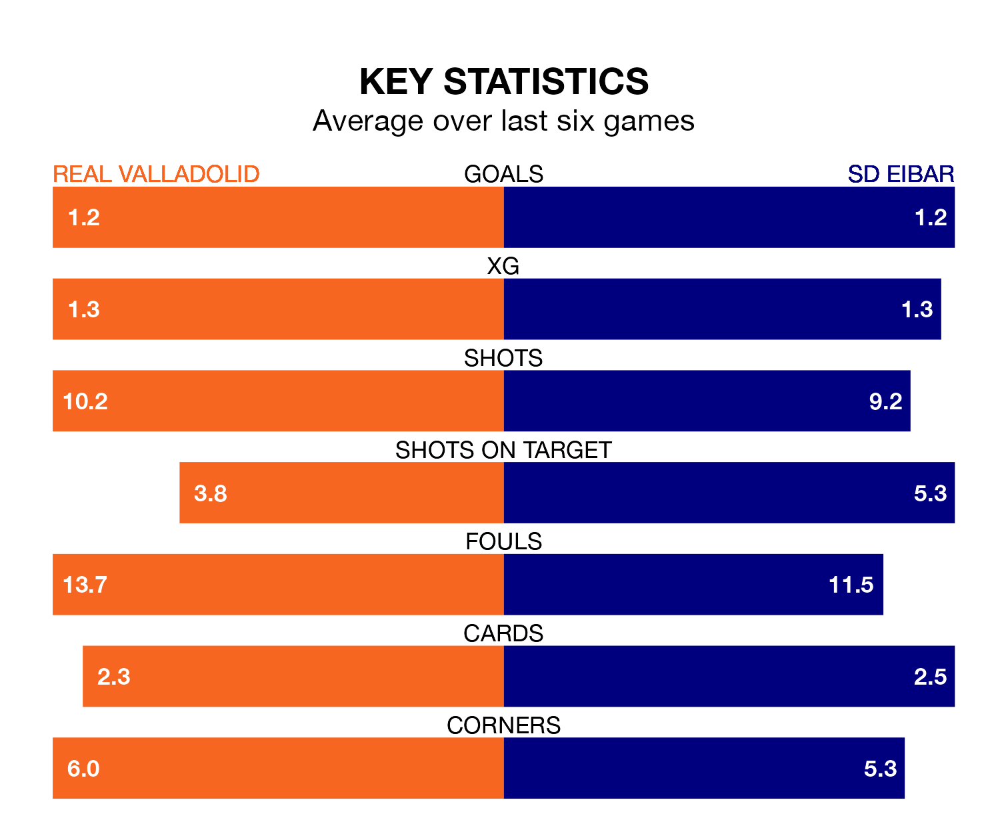

SD Eibar travel to Real Valladolid on Sunday in the Segunda División.
The visitors come into the game on the back of a win in their last match, having beaten Villarreal B 2-0 at home, with goals from José Corpas Serna and Sergio León.
Valladolid, meanwhile, lost their last match, 2-0 against Racing Club de Ferrol.
With 48 goals in 31 games so far this season, Eibar are the league's joint-second-highest scorers with 1.5 goals per game. And they are conceding at an average rate, letting in 34 goals at a rate of 1.1 per game.
Valladolid, meanwhile, are average scorers, with 1.1 goals per game. They have conceded 1.0 goal per game.
In the last 10 years, Valladolid and Eibar have played each other on nine occasions. Valladolid won four of them, Eibar three, and they drew twice.
On average, Valladolid scored 1.3 goals and Eibar 1.3 in those matches.
Their last meeting was on October 27, when Eibar won 5-1 at home.
The visitors are fourth in the table after 31 games, of which they have won 15 and drawn seven, earning 52 points.
The home side are four places behind Eibar in eighth, with 14 wins and six draws putting them on 48 points.
In Jon Bautista Orgilles, Eibar have one of the league's most on-form strikers so far this season. He has notched 11 goals in 26 appearances, to sit fifth in the scoring charts.
His goal rate of one every 158 minutes is quicker than that of Mamadou Sylla Diallo, Valladolid's top scorer with a goal every 301 minutes, and a total of six goals in 24 games.
Valladolid are in mixed form in the Segunda División, with two wins and two draws from their last six games.
With three wins and a draw over that period, the away team's form is slightly better – they have taken 10 points from 18, compared to the hosts' eight.
Sunday's match will be refereed by Salvador Lax Franco, who has taken charge of 16 Segunda División games so far this season, issuing three red cards and booking 62 players. He has awarded two penalties.
The last Valladolid game Lax Franco refereed was a 0-0 away draw with Elche CF on January 21. His last Eibar match was their 1-0 win at home against Mirandés on January 26.
Updated: 10:19 (UTC), 22/03/24